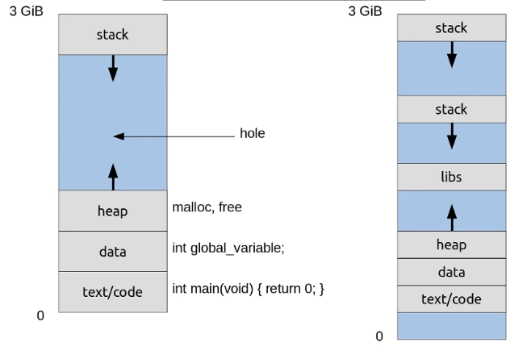
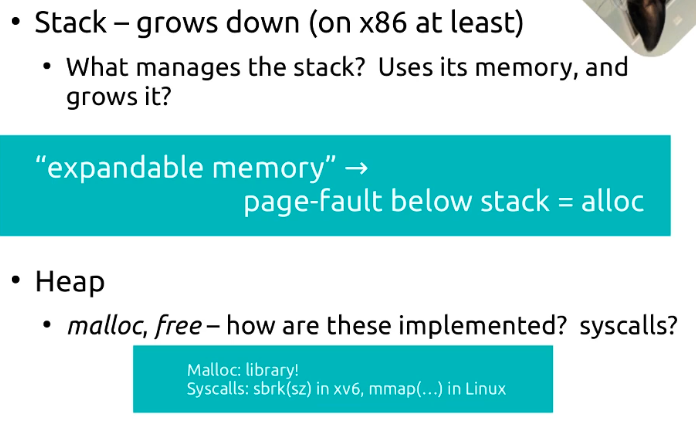
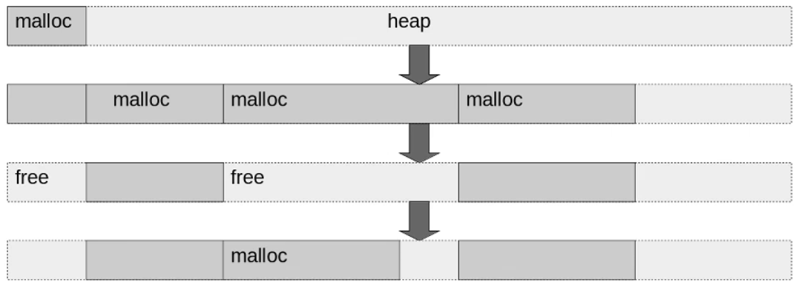

memory system call
mmap()实现的是逻辑上的内存分配，即它为进程分配虚拟内存地址空间。这种分配与物理内存的实际分配是分离的，物理内存的分配则由操作系统的内存管理机制在需要时才执行。

局部变量通常是存放在栈中的，并且创建局部变量不需要使用系统调用。这是因为栈内存已经是预先分配给每个进程的，并在进程运行时自动管理。
当一个函数被调用时，CPU 会自动为该函数的局部变量在栈上分配空间。这包括：
自动分配：当函数被调用时，其局部变量（如整数、数组、结构等）会自动分配在栈上。这个过程不需要操作系统的介入，而是由编译器在编译时决定的，并且在运行时由CPU的指令自动处理。
作用域和生命周期：局部变量只在其定义的函数体内有效，当函数执行结束后，局部变量所占用的栈空间会被释放。这种内存的分配和释放是非常高效的，因为它仅涉及到栈指针的移动。
因此，局部变量的处理方式非常高效，无需进行系统调用或复杂的内存管理操作。这也是栈被用作存储局部变量和函数调用记录（调用栈）的原因之一。
内存栈的管理确实涉及到多个层次，包括高级语言、编译器和操作系统。让我们自顶向下串联起这个过程来看：
高级语言层面：
高级编程语言（如C、C++、Java等）提供了函数调用的语法，允许程序员定义函数和局部变量。这些语言通常有明确的规定或约定，指导如何使用栈（尽管在代码中你不直接操作栈）。
在这一层面，语言的设计决定了一些栈的使用模式，如自动变量的生命周期管理（即变量在函数调用期间存在）。
编译器层面：
编译器将高级语言编写的程序转换为机器代码。在这个过程中，编译器负责实现语言层面的规范，包括栈的使用。
编译器为每个函数调用生成的代码中安排栈空间的分配和释放。它决定何时将变量推入栈中，何时将其移除，并确保函数返回地址和必要的状态信息（如寄存器值）得到正确处理。
编译器也负责优化，例如减少栈的使用或调整局部变量的存储来提高性能。
操作系统层面：
当程序运行时，操作系统负责分配给每个进程一个初始栈空间。操作系统的内存管理器监视程序的栈使用情况，确保不会超出预设的界限，并在需要时进行栈的自动扩展（这种情况较少，因为大多数系统对栈的初始大小设置已足够一般使用）。
操作系统提供必要的保护机制，如硬件辅助的内存保护，以防止栈溢出攻击或程序间的数据干扰。
硬件层面：
计算机的硬件（特别是CPU）直接支持栈操作。CPU有专门的指令来处理栈的推入（push）和弹出（pop），以及调用（call）和返回（ret）指令，这些都涉及栈的操作。
处理器还可能提供如栈指针寄存器等硬件资源，以支持栈的高效管理。
总的来说，栈的管理是一个由高级语言的设计、编译器的实现、操作系统的支持和硬件功能共同完成的过程。每个层面都有其角色和责任，共同确保了栈的高效和安全使用。在整个过程中，编译器和操作系统的角色尤为关键，它们确保了栈的实际运作符合程序的逻辑需求和计算机系统的物理限制。
Python（特别是其最常见的实现，CPython）的内存管理确实主要关注堆内存，而不是栈内存。这里的关键在于理解Python是如何在其虚拟机中处理内存的：
引用计数：Python中的对象几乎都是动态分配在堆内存中的。每个对象包括一个引用计数器，当有新的引用指向该对象时，引用计数增加；当引用消失时，计数减少。当引用计数降至零时，对象立即被回收，相关内存被释放。这种方式可以快速处理绝大多数不再使用的对象。
标记-清除和分代收集：为了处理循环引用，Python使用标记-清除算法作为补充。这通常结合了分代收集技术，其中对象根据其存活时间被划分到不同的“代”中，从而优化垃圾回收过程。标记-清除算法会遍历所有对象，标记从可达根（如全局变量、活动的栈帧等）可访问的对象，未被标记的对象在清除阶段被认为是垃圾并回收。
栈内存管理：在Python中，栈内存主要用于存储函数的调用记录，如参数、局部变量和返回地址。这部分内存的管理通常较为简单，因为当函数调用返回时，相关的栈帧就自然地被清空了。Python的虚拟机负责管理这些栈帧的生命周期。需要注意的是，Python的函数局部变量也是对象，即使它们在逻辑上存储在栈帧中，它们实际的数据（如果是复杂对象）通常还是存储在堆内存中。
Python和C语言层面：CPython的核心是用C语言编写的，这意味着底层的很多内存管理（包括栈内存的管理）实际上是由C语言在操作系统层面处理的。Python层面的垃圾回收机制不直接介入栈内存的管理，而是通过C语言运行时环境和操作系统的支持来实现。
在Python中，尤其是在CPython实现中，大部分对象的内存分配确实是在堆空间进行的。这里有几个重要的点来解释这个过程：
对象模型：
Python是一种高度动态的语言，其中几乎所有的数据类型都是以对象的形式存在的。这包括基础数据类型如整数、浮点数、字符串，以及复合数据类型如列表、字典等。
由于Python的动态类型特性，对象需要存储额外的信息，如类型标识、引用计数等。这些信息和对象的实际数据一起存储在堆内存中。
内存分配：
当你在Python中创建一个对象时（比如一个整数或列表），CPython通常使用其内部的内存管理系统来分配内存。这个系统不是直接调用标准的
malloc，而是使用一个更为复杂的内存分配策略，这包括了一个叫做“对象专用内存分配器”的机制。这个内存分配器优化了对小对象的分配和回收，通过维护自己的一套空闲列表（free lists）来加速小对象的分配和回收过程，减少对标准
malloc和free调用的依赖。
内存管理器的角色：
Python的内存管理器在底层可能会使用
malloc来获取大块的堆内存，这些内存随后被其对象分配器用于实际对象的分配。对于大对象或特定情况，Python的内存管理器仍然可能直接使用malloc。CPython还实现了一个层次更高的内存管理策略，即“分代垃圾收集”，这有助于有效管理长时间存活的对象和解决循环引用问题。
性能和优化：
Python的内存分配策略通过减少对操作系统内存管理调用的依赖，尽可能地提高内存操作的效率。对象专用的内存分配器可以快速响应内存分配和回收的请求，特别是对于Python运行环境中频繁创建和销毁的小对象。
总结来说，Python中的变量和对象的内存分配主要发生在堆空间，使用的是内部优化过的内存管理策略，而不是直接频繁调用malloc。这种方法为Python的动态性和运行时效率提供了支持，同时也确保了内存的有效管理。
是的，你的理解是正确的。PyTorch 和 TensorFlow 都主要针对 GPU 内存使用了特殊的内存池技术。这是因为 GPU 内存管理和分配的开销相比于 CPU 更高，且对性能的影响也更为显著，特别是在深度学习应用中，频繁地内存分配和释放可以成为性能瓶颈。
对于 CPU 内存，这两个框架通常依赖于操作系统提供的标准内存管理机制。这包括使用操作系统的内存分配器（如在 Linux 上使用 glibc 的 malloc 和 free）来管理内存。这是因为：
成本与效率：CPU 的内存分配和回收的成本相对较低，操作系统已经对这些操作进行了高度优化。
系统集成：依赖操作系统的内存管理允许框架更好地与系统资源集成，利用操作系统的高级功能，如虚拟内存、页替换策略等。
内存可用性：CPU 内存通常比 GPU 内存资源丰富，内存管理的压力相对较小，因此直接使用操作系统的内存管理通常足够高效。
针对 CPU 的内存优化
虽然基本内存分配依赖于操作系统，但 PyTorch 和 TensorFlow 也实施了一些策略来优化 CPU 上的内存使用，例如：
内存复用：在一些操作中，框架会尽量复用已分配的内存，减少连续的分配和释放操作。
缓存对齐：为了提高内存访问的效率，一些张量操作可能需要对齐内存，这有助于提升在多核 CPU 上的并行处理性能。
总结
在 GPU 上，内存池技术是为了解决 GPU 内存分配和释放的高开销问题而设计的，而在 CPU 上，PyTorch 和 TensorFlow 通常依赖于操作系统的内存管理器来处理内存分配和回收。这样做利用了操作系统内存管理的成熟性和效率，同时在必要时通过框架层面的优化来提高性能。
TensorFlow Lite（TFLite）是 TensorFlow 的一个轻量级解决方案，专为移动设备和嵌入式设备设计。它专注于为这些资源受限的设备提供高效的推理能力。在内存管理方面，TFLite 采取了一些特殊的措施来确保尽可能低的内存占用和高效的执行。
TFLite 内存管理的主要特点：
静态内存分配：
TFLite 模型在加载时通常会进行静态内存分配。这意味着模型的所有参数（权重和激活）所需的内存在推理开始之前就已经分配好了。这种方式有助于避免推理过程中动态内存分配带来的性能损耗。
内存复用：
TFLite 设计中包括了高效的内存复用策略。通过内存复用，TFLite 在执行不同层的操作时尽量使用相同的内存区块，从而减少总体内存需求。这是通过分析模型的计算图，在可能的情况下安排相同的内存块来存储临时数据实现的。
Arena 内存管理：
TFLite 使用了一个称为“arena”的系统来管理内存。在这个系统中，所有的内存分配都从一个大的内存池中进行。这个内存池在模型加载时确定大小，并在整个模型的生命周期中被重复使用。Arena 内存管理有助于减少碎片化，使得内存使用更加高效。
最小化模型大小：
通过使用量化和其他模型优化技术，TFLite 能够减小模型的存储和运行时内存需求。量化不仅减少了模型的大小，还可能减少运算需求，因为使用更简单的数据类型（如从浮点到整数）可以减轻内存访问的负担。
直接访问：
在某些情况下，TFLite 允许模型直接在输入数据上操作，无需复制数据到新的内存区域。这种“就地”计算减少了额外的内存需求，并提高了数据处理的速度。
总结
TFLite 的内存管理策略非常适合在内存受限的设备上执行。通过静态内存分配、内存复用、以及高效的内存池管理，TFLite 能够在保持较低内存占用的同时，提供快速有效的模型推理。这些特性使得 TFLite 成为移动和嵌入式设备上进行机器学习推理的理想选择。
在 PyTorch 中，pin_memory 是一个用于优化数据传输到 GPU 的内存管理策略。当你设置数据为 pin_memory，这表示数据将被固定（pinned 或 non-pageable），意味着操作系统将不会将这些内存页交换到磁盘上，这种内存状态使得 CPU 到 GPU 的数据传输更加高效。

调用内核需要大约100cycle
内存管理流程（Linux 内存分配）
内核和用户空间的划分：
Linux 操作系统将内存划分为两部分：内核空间和用户空间。
内核负责管理所有的物理内存分配，而用户空间的应用程序只能通过系统调用来请求内存。
内存管理机制：
伙伴系统：用于分配和回收物理内存块（主要是页框）。
slab/slub 分配器：用于内核对象的高效分配（例如文件描述符、任务结构体等）。
vmalloc：用于分配连续的虚拟地址空间（物理地址可以不连续）。
malloc 的实现：
malloc是 C 标准库函数，它使用系统调用brk/sbrk或mmap向内核申请内存。在 Linux 内核中，有两种主要方式分配用户空间内存：
Heap（堆）：
brk/sbrk系统调用扩展进程的堆。内核会在页表中为新扩展的堆区域创建虚拟地址到物理地址的映射。
匿名内存映射（Anonymous Memory Mapping）：
使用
mmap系统调用。内核同样会创建虚拟地址到物理地址的映射。
页表和物理内存分配：
当进程第一次访问某个虚拟地址时，会产生缺页中断（Page Fault）。
内核处理缺页中断，并调用伙伴系统为这个虚拟页分配一个物理页框。
伙伴系统返回一个空闲的物理页框，内核会将这个页框与虚拟地址关联起来（通过页表）。
如果申请的内存区域较大，内核会直接通过伙伴系统分配多个页框。
内存分配的完整流程
用户空间请求内存：
使用
malloc或者mmap请求内存。
C 库和系统调用：
C 标准库使用
brk/sbrk或mmap来与内核通信。
内核分配页框：
内核找到一个空闲的虚拟地址区域，更新页表条目。
若虚拟地址对应的物理页框尚未分配（初次访问），则由伙伴系统提供新的物理页框。
举个例子：
当你调用
malloc分配一个大块内存时，比如 1MB 的内存，通常会使用mmap来分配。内核会为该 1MB 内存区域分配虚拟地址，并在第一次访问时，通过伙伴系统分配合适的物理页框（2^0、2^1、2^2 … 2^n）。
总结
伙伴系统负责分配物理页框： 在
malloc或其他内存请求时，最终物理内存是由伙伴系统提供的。页表负责虚拟地址到物理地址的映射：
malloc和mmap分配的虚拟地址区域通过页表映射到伙伴系统提供的物理页框。
vmalloc为内核空间提供虚拟内存管理，而mmap是用户空间的等效功能。vmalloc通过映射物理页来管理内存，这些物理页可能是通过伙伴系统分配的。在Linux系统中，用户空间程序通常不能直接决定使用伙伴系统、Slab分配器还是
vmalloc来分配内存，因为这些是内核级别的内存管理机制。用户程序主要通过系统调用如malloc,brk, 或mmap来申请内存，这些系统调用由操作系统内部处理，并且它们会根据不同的需求和上下文使用适当的内核内存管理策略。这里是如何在用户空间和内核空间中申请内存的方法和它们的关系：
用户空间内存申请：
使用
malloc或其他高级库函数（如C++中的new）来分配内存。这些调用最终通过brk或mmap来增加进程的虚拟内存。直接使用
mmap来申请大块内存或映射文件到内存。内核空间内存申请：
伙伴系统: 内核代码需要分配大块连续的物理内存时直接调用伙伴系统提供的函数（如
alloc_pages）。Slab分配器: 当内核需要频繁创建和销毁小型内核对象时使用，如使用
kmem_cache_alloc从特定的Slab缓存中分配。
vmalloc: 如果内核模块或驱动需要大块连续的虚拟地址空间（物理地址可以是非连续的），则使用vmalloc来分配。这在用户空间程序中不可直接使用。如果你是一个内核开发者或者在编写内核模块，并且你需要确保使用
vmalloc来分配内存，你应该在你的内核代码中直接调用vmalloc函数。在用户层面，通常你无法直接知道或控制内存分配是通过伙伴系统、Slab分配器还是
vmalloc实现的，因为这些细节被抽象在操作系统的内核层管理中。不过，如果你正在进行内核开发或者有权限访问内核调试工具和日志，你可以使用一些方法来识别内存分配的来源。
内核日志和调试信息：
查看内核日志（如使用
dmesg命令）可能会提供关于内存分配的信息，尤其是在内核开发或测试时，开发者可能会在内存分配函数中加入日志信息来追踪。使用内核调试器（如
kgdb或使用/proc文件系统）可以直接查看内存分配的调用栈，从而确定是哪个内核函数负责分配。内核文档和源代码：
查阅相关的内核源代码和文档可以帮助了解在何种情况下会使用伙伴系统、Slab分配器或
vmalloc。例如，vmalloc用于需要大量连续虚拟地址的场合，而Slab分配器通常用于分配内核中的对象，如进程描述符等。使用系统监控工具：
工具如
SystemTap、perf或ftrace可以用来监控内核函数的调用，包括内存分配函数。通过设置适当的探针，可以监测到内存分配的调用和它们的上下文。内核配置和统计：
一些内核配置文件和统计信息，如
/proc/meminfo、/proc/slabinfo，提供了当前内存使用情况的详细数据，可以从中获取一些关于内存分配策略的间接信息。如果你的目标是为了优化或调试，了解这些细节非常有用。但对于大多数应用程序开发者来说，操作系统提供的抽象层已足够满足开发需求，无需关心底层的具体实现细节。如果你正在处理与性能相关的问题，或者需要对内存使用进行精细控制，那么以上方法可以帮助你深入理解和诊断内存管理行为。
vmalloc 和 malloc 区别与联系
malloc：是 C 标准库函数，用于在用户空间分配动态内存。
通过堆管理或匿名内存映射（
mmap）的方式分配虚拟地址空间。用户程序直接使用
malloc分配内存。
vmalloc：是 Linux 内核的内存分配函数，用于在内核空间分配虚拟地址连续、但物理地址可能不连续的内存。
适用于需要大块连续虚拟内存、但不要求物理地址连续的场景（例如分配大数组）。
主要用于内核模块和驱动程序的开发中。
vmalloc 和 malloc 的区别
运行空间：
malloc：用户空间内存分配，依赖标准 C 库。vmalloc：内核空间内存分配，直接在内核中使用。
物理地址连续性：
malloc：在用户空间分配内存时，页表会映射到实际的物理内存页。vmalloc：虚拟地址连续，物理地址可能不连续，使用非连续的页框来满足虚拟地址的连续性。
虚拟地址连续性：
malloc：根据不同的内存分配机制（堆或mmap）可能是连续的虚拟地址。vmalloc：始终确保返回的虚拟地址空间是连续的。
分配机制：
malloc：通过堆管理或匿名内存映射。vmalloc：通过分配多个页框并建立页表映射来实现虚拟地址连续性。
vmalloc 和 malloc 的联系
二者的主要联系在于它们都是用于内存分配的手段：
内存需求：在内核空间中，如果需要分配用户空间以外的内存，则可以使用
vmalloc。系统调用关系：用户空间的
malloc最终通过系统调用将请求传递给内核，而内核可能使用伙伴系统或vmalloc进行实际的物理内存分配。
使用示例
malloc使用示例：#include <stdlib.h> #include <stdio.h> int main() { int *arr = (int *)malloc(10 * sizeof(int)); if (arr == NULL) { printf("Memory allocation failed\n"); return 1; } for (int i = 0; i < 10; ++i) arr[i] = i; free(arr); return 0; }
vmalloc使用示例：#include <linux/vmalloc.h> #include <linux/module.h> #include <linux/init.h> static int __init vmalloc_example_init(void) { char *memory = vmalloc(1024 * 1024); // 分配 1MB 的内存 if (!memory) { printk(KERN_ERR "vmalloc failed\n"); return -ENOMEM; } strcpy(memory, "Hello, vmalloc!"); printk(KERN_INFO "Allocated memory: %s\n", memory); vfree(memory); return 0; } static void __exit vmalloc_example_exit(void) { printk(KERN_INFO "Module exiting\n"); } module_init(vmalloc_example_init); module_exit(vmalloc_example_exit); MODULE_LICENSE("GPL"); MODULE_AUTHOR("Author");
总结
malloc用于用户空间的内存分配，而vmalloc用于内核空间的虚拟地址连续内存分配。malloc与vmalloc的最大区别在于分配的内存地址连续性和运行空间的不同。虽然用途不同，但它们都需要操作系统的内存管理机制来支持。
伙伴系统的连续性
物理地址连续：
伙伴系统主要用于分配物理地址连续的内存块。
它将物理内存划分成 2 的幂次方大小的块，这些块的大小范围从一个页面（通常是 4KB）到几兆字节不等。
当需要分配一块连续的物理内存时，伙伴系统尝试从相应的块大小池中分配。
如果没有足够大的块，就会递归地将更大的块分成更小的块来满足分配需求。
虚拟地址连续：
伙伴系统返回的内存通常也被映射为虚拟地址连续的空间，因为它通常用于内核直接访问的目的（比如
kmalloc）。
vmalloc 的不连续性
虚拟地址连续：
vmalloc在虚拟地址空间中分配连续的内存区域。该区域的虚拟地址连续，但实际分配的物理内存块可能是不连续的。
这与用户空间的
mmap类似，可以在页表中将不连续的物理页框映射为虚拟地址连续的内存区域。
物理地址不连续：
vmalloc为了解决大块物理内存不足的问题，将虚拟地址连续的内存区域映射为多个不连续的物理内存页框。
举例解释
伙伴系统的连续性：
例如，伙伴系统可以分配 4 页（16KB）的连续物理内存，意味着在物理内存中的这 4 页是连续的。
void *mem = kmalloc(16 * 1024, GFP_KERNEL);
vmalloc的不连续性：使用
vmalloc时，返回的虚拟地址空间是连续的，但实际的物理内存是由多个非连续页框组成的。
void *mem = vmalloc(16 * 1024);
使用场景对比
伙伴系统：
分配物理地址连续的内存块。
用于需要高效访问、物理地址连续的内存场景，如 DMA 缓冲区。
kmalloc就是基于伙伴系统实现的。
vmalloc：分配虚拟地址连续、物理地址不连续的内存块。
用于需要大块内存但不要求物理地址连续的场景，如大数组或缓存。
总结
伙伴系统：物理地址和虚拟地址通常都是连续的。
vmalloc：虚拟地址连续，但物理地址可能不连续。
希望这个解释对你理解伙伴系统和 vmalloc 之间的区别有所帮助。
vmalloc、伙伴系统和Slab分配器都是Linux内核中的内存管理机制，但它们各自承担着不同的角色和用途，并不是简单的三选一关系。
下面是它们各自的主要功能和使用场景：
伙伴系统（Buddy System）：
用途：伙伴系统主要用于管理物理内存的分配和回收，特别是大块的连续物理内存页。
工作方式：它通过将内存分割成多个大小的块来工作，这些块可以是2的幂大小（例如，1页、2页、4页等）。当内存被释放时，伙伴系统会尝试合并相邻的空闲块以形成更大的块。
Slab分配器：
用途：Slab分配器用于分配小而频繁使用的数据结构，如内核对象（例如task_struct、inode等）。它主要用于提高内存分配的效率和减少内存碎片。
工作方式：Slab分配器在伙伴系统分配的页框上构建，通过预先分配和缓存常用对象的方式，来快速满足相同类型的内存请求。
vmalloc：用途：
vmalloc用于分配连续的虚拟地址空间，但分配的物理内存可以是非连续的。这在需要大量内存而物理内存可能碎片化的情况下非常有用，例如加载大的模块或驱动。工作方式：
vmalloc通过映射散布在物理内存中的页框来创建一个连续的虚拟地址区域。这种方式虽然在虚拟空间上连续，但物理上可以是分散的。
因此，这三种机制都在Linux内存管理中扮演着重要角色，它们共同作用以满足不同的内存分配需求，而不是相互替代的选择。伙伴系统提供底层的物理内存页分配，Slab分配器优化特定类型对象的重复分配，而vmalloc解决大块虚拟连续空间的需求。
在Linux操作系统中，用于内存管理的几个主要系统调用包括：
brk()和sbrk()- 这些调用用于动态地改变进程的数据段大小。brk()设置新的结束地址，而sbrk()增加或减少数据段的大小。mmap()- 这是一个非常强大的系统调用，用于将一个文件或设备映射进进程的地址空间，或者创建匿名内存映射。它广泛用于文件I/O操作和实现共享内存。munmap()- 用于撤销mmap()的映射，释放相应的内存区域。mprotect()- 修改一段指定内存区域的保护权限，如读、写、执行权限等。madvise()- 这个调用可以用来告诉内核关于某个内存区域预期的使用模式，帮助内核优化其行为。
四、内存管理 brk 改变数据段空间的分配 sbrk 参见brk mlock 内存页面加锁 munlock 内存页面解锁 mlockall 调用进程所有内存页面加锁 munlockall 调用进程所有内存页面解锁 mmap 映射虚拟内存页 munmap 去除内存页映射 mremap 重新映射虚拟内存地址 msync 将映射内存中的数据写回磁盘 mprotect 设置内存映像保护 getpagesize 获取页面大小 sync 将内存缓冲区数据写回硬盘 cacheflush 将指定缓冲区中的内容写回磁盘
这些系统调用为Linux提供了丰富的内存管理功能，使得开发者可以更有效地控制和优化内存的使用。
当你调用mmap()和brk()时，操作系统会立即将虚拟内存空间分配给进程，但物理内存的分配可能不会立即发生，这取决于操作系统的内存管理策略。
mmap(): 虽然mmap()会立即创建一个虚拟内存区域，并与文件系统或匿名内存关联起来，但物理内存通常是通过按需分页（demand paging）分配的。也就是说，实际的物理页面可能只有在你首次访问该内存区域时才真正被分配和加载到内存中。brk(): 类似于mmap()，brk()调整的是程序的数据段界限，增加了进程可用的虚拟内存空间。尽管如此，这些新的虚拟内存页面也可能是通过按需分页延迟地绑定到物理内存上。
总结来说，mmap()和brk()调用增加了虚拟内存空间，但物理内存的分配通常是”惰性的”，即按需在页面首次被访问时进行。这种设计可以更有效地使用内存资源，避免无用的内存分配，特别是在内存资源紧张的情况下。
实际内存分配过程
用户态申请内存：
用户程序调用
malloc（例如 2MB 的内存）。malloc仅分配虚拟地址空间。
内核处理缺页异常：
用户程序首次访问这段虚拟内存空间，触发缺页异常。
缺页异常由内核捕获。
内核调用
buddy system：内核调用
buddy system分配实际的物理内存页。这些物理页被映射到相应的虚拟地址空间。
mmap 分配的两种主要类型
匿名映射（Anonymous Mapping）：
描述：将虚拟地址空间映射到匿名物理内存。
特征：此内存无法直接与文件关联，仅在内存中存在。
使用场景：替代
malloc，用于分配大块内存（例如共享内存、堆栈扩展等）。使用
mmap分配内存，而不将虚拟地址空间映射到文件。纯粹用于分配内存块，通常与
MAP_PRIVATE一起使用。
文件映射（File Mapping）：
描述：将虚拟地址空间映射到文件内容。
特征：允许直接访问文件内容，支持读写操作。
使用场景：将文件内容映射到内存以便更快速访问。
Lazy Allocation 工作机制
流程解释：
虚拟地址空间分配：
当程序调用
mmap时，内核会为请求的地址范围分配虚拟地址空间。这时虚拟地址空间并未实际映射到物理内存，页表条目为空或未映射。
缺页异常触发：
当程序首次访问这段虚拟地址空间时，访问的页面不存在于物理内存中，内核会触发缺页异常。
内核捕获异常并查找与该虚拟地址相关的内存映射。
实际分配物理内存：
如果该映射是匿名的，内核会从
buddy system中分配一页新的物理内存页。如果该映射与文件关联，内核将从文件中读取内容填充该页。
分配或填充完成后，内核将物理页映射到对应的虚拟地址，并更新页表条目。
继续执行：
程序继续执行，并可以正常访问映射的物理页内容。
在 Linux 中，mmap 系统调用的 MAP_POPULATE 标志允许提前分配物理内存并填充页表，以确保虚拟地址空间与物理内存相对应。这对性能和分配延迟有不同的影响。
MAP_POPULATE 标志的含义
功能：
当指定
MAP_POPULATE标志时，mmap系统调用会尝试提前将虚拟内存映射到物理页，以避免后续的缺页错误（Page Fault）。这样做会预先加载所有页表，从而减少程序第一次访问时的缺页错误。
优点：
减少缺页异常：避免在第一次访问时发生缺页异常，提高访问速度。
更快的程序执行：由于页表已填充，后续访问虚拟内存更快。
缺点：
初始分配较慢：因为要提前加载页表和分配物理页，所以
mmap调用本身需要更多时间来完成。更高的内存使用：物理内存立即分配，可能导致内存使用增加。
在 Linux 系统上，malloc 和 mmap 都可以用于分配内存，但是它们的底层实现方式和使用场景有明显的区别。让我仔细讲讲它们的底层实现以及这些区别带来的影响。
malloc 和 mmap 的底层实现
malloc：基于 C 标准库的
glibc实现。内部使用了
brk和mmap两种不同的内存分配机制。默认情况下，
brk用于分配小块内存，mmap用于分配大块内存。
mmap：mmap是一个系统调用，直接与操作系统的内存管理相关联。它允许程序分配内存或将文件映射到内存。
malloc 的实现细节
堆（Heap）：
malloc使用brk系统调用来增加堆的大小，并从堆中分配小块内存。堆是一块连续的内存区域，通过
sbrk或brk系统调用可以增长或缩减堆的大小。malloc使用ptmalloc（glibc版本）或其他类似的分配器进行分配。
大块内存（
mmap）：当需要分配非常大的内存块时，
malloc使用mmap系统调用直接分配。内存块通常使用
malloc内部的阈值（M_MMAP_THRESHOLD，默认值通常为 128KB）来区分大小。
mmap 的实现细节
系统调用：
mmap是一个系统调用，直接从操作系统获取虚拟地址空间。可以将文件内容或匿名内存直接映射到进程的虚拟地址空间中。
虚拟地址空间映射：
使用
mmap分配的内存不是通过堆管理，而是直接分配给进程的虚拟地址空间。可以使用
MAP_ANONYMOUS标志指定分配匿名内存，不关联任何文件。
malloc 与 mmap 的区别与影响
1. 内存分配方式
malloc：默认使用堆空间分配小块内存，基于
brk系统调用。使用
mmap系统调用直接分配大块内存。
mmap：完全不受堆空间限制，直接从虚拟地址空间分配内存。
2. 内存管理方式
malloc：基于分配器实现复杂的分配策略（如双向链表、二叉树等）。
适合小块内存的频繁分配与释放。
mmap：内存区域与其他映射区域隔离，分配/释放直接操作内核。
适合大块内存的高效分配。
3. 内存释放
malloc：小块内存通过
free函数返回给堆，但堆大小可能不会减少。大块内存使用
mmap分配的，在free时直接通过munmap释放。
mmap：映射区域通过
munmap直接释放。
4. 性能与效率
malloc：小块内存的分配与释放速度快，适合频繁的分配与释放操作。
大块内存分配通过
mmap实现，效率稍低。
mmap：大块内存分配的速度快，但小块内存分配效率低。
更适合长生命周期的大块内存。
示例：malloc 与 mmap 分配大块内存
使用 malloc 分配大块内存
#include <stdio.h>
#include <stdlib.h>
int main() {
size_t size = 100 * 1024 * 1024; // 100MB
char *buffer = (char*)malloc(size);
if (!buffer) {
perror("malloc failed");
return 1;
}
printf("Allocated memory using malloc\n");
// 使用内存
for (size_t i = 0; i < size; ++i) {
buffer[i] = (char)(i % 256);
}
printf("Accessed memory\n");
free(buffer);
return 0;
}
使用 mmap 分配大块内存
#include <stdio.h>
#include <sys/mman.h>
#include <unistd.h>
int main() {
size_t size = 100 * 1024 * 1024; // 100MB
char *buffer = (char*)mmap(NULL, size, PROT_READ | PROT_WRITE,
MAP_PRIVATE | MAP_ANONYMOUS, -1, 0);
if (buffer == MAP_FAILED) {
perror("mmap failed");
return 1;
}
printf("Allocated memory using mmap\n");
// 使用内存
for (size_t i = 0; i < size; ++i) {
buffer[i] = (char)(i % 256);
}
printf("Accessed memory\n");
munmap(buffer, size);
return 0;
}
总结
实现区别：
malloc主要使用brk和mmap结合。mmap完全依赖系统调用分配虚拟地址空间。
影响：
malloc更适合小块内存的频繁分配与释放。mmap更适合大块内存的直接分配。
希望这些解释能帮助你更好地理解它们的区别和联系。
在Linux操作系统中，用于内存管理的几个主要系统调用包括：
brk()和sbrk()- 这些调用用于动态地改变进程的数据段大小。brk()设置新的结束地址，而sbrk()增加或减少数据段的大小。mmap()- 这是一个非常强大的系统调用，用于将一个文件或设备映射进进程的地址空间，或者创建匿名内存映射。它广泛用于文件I/O操作和实现共享内存。munmap()- 用于撤销mmap()的映射，释放相应的内存区域。mprotect()- 修改一段指定内存区域的保护权限，如读、写、执行权限等。madvise()- 这个调用可以用来告诉内核关于某个内存区域预期的使用模式，帮助内核优化其行为。
这些系统调用为Linux提供了丰富的内存管理功能，使得开发者可以更有效地控制和优化内存的使用。